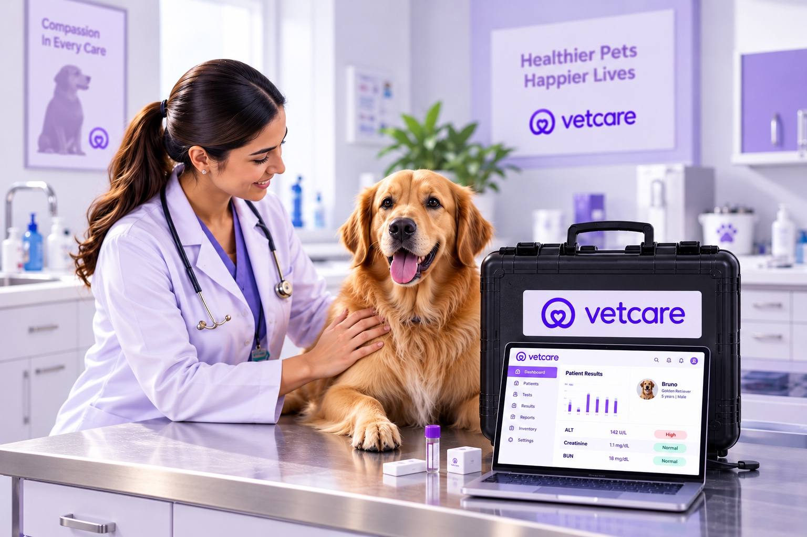
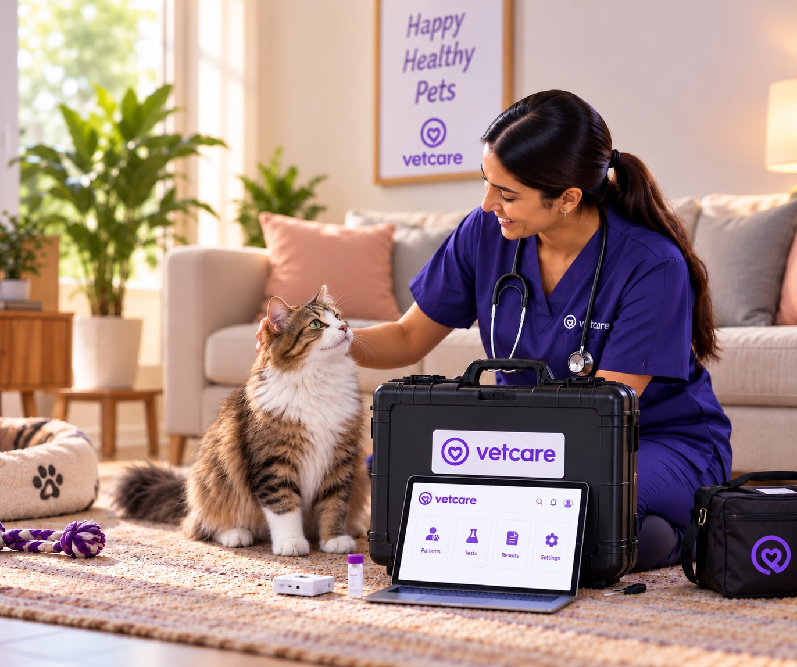
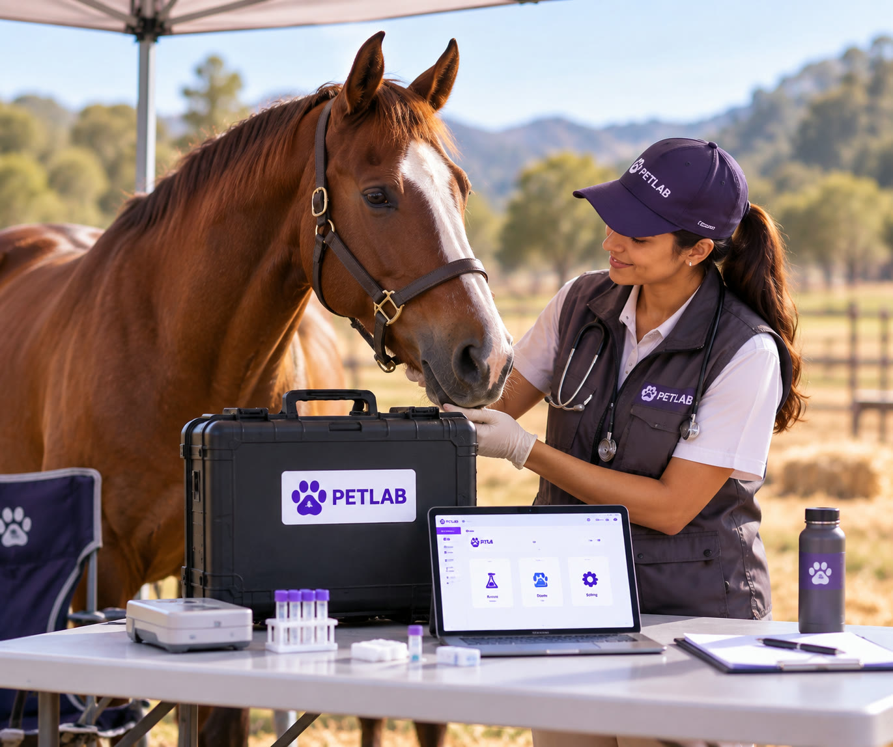
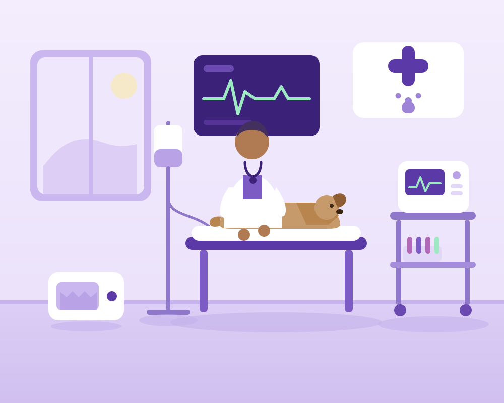
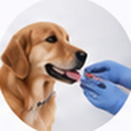
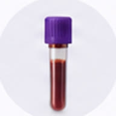
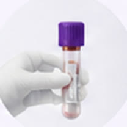
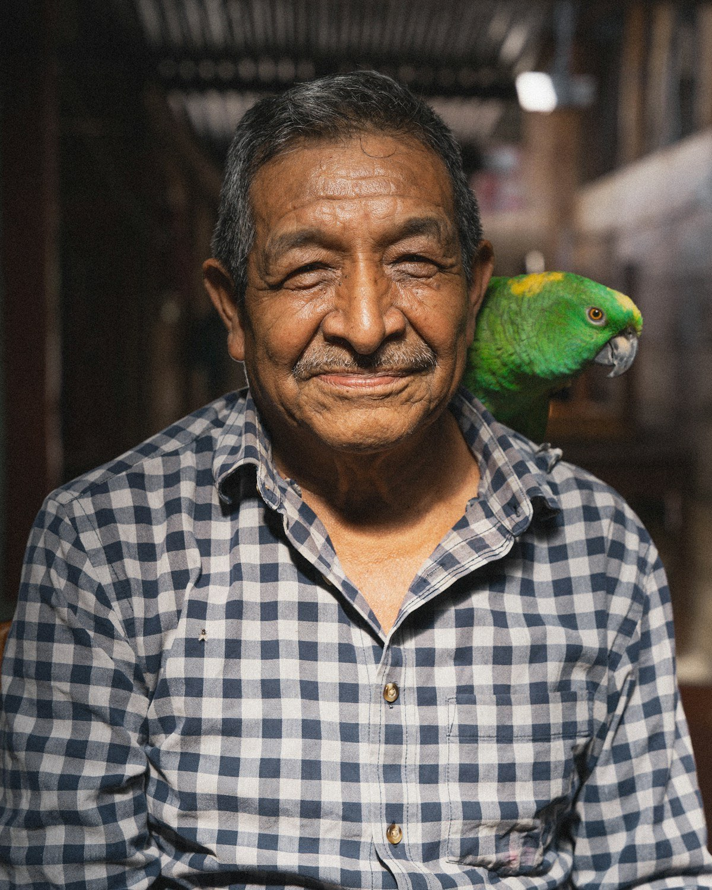
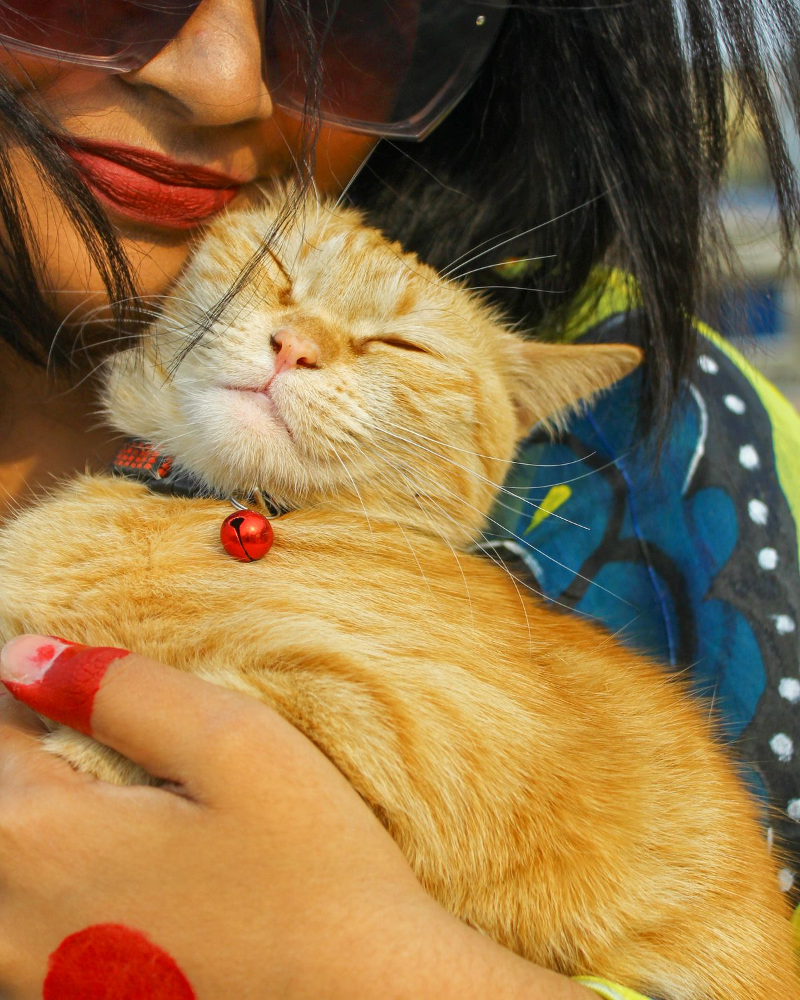
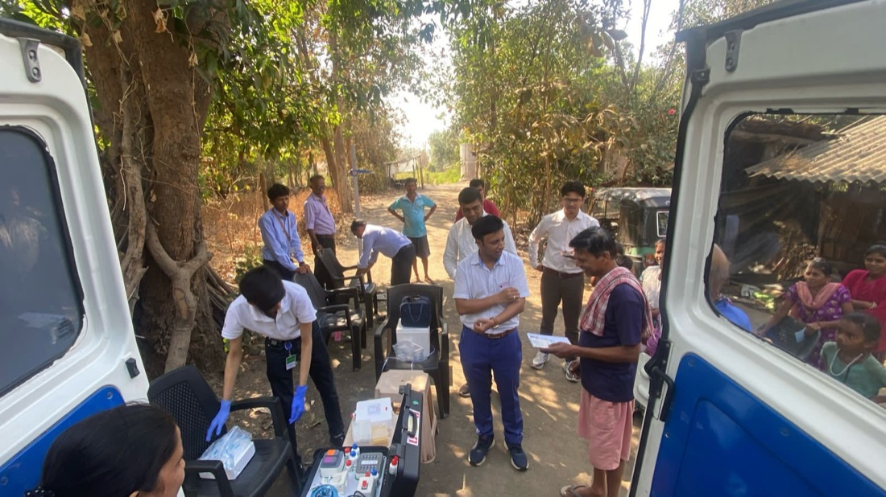

Accurate
Reliable results for confident clinical decisions.

AI-powered point-of-care diagnostics for veterinarians
Run essential diagnostics in-clinic and get AI-assisted results during the consultation - no courier, no two-day wait.
Better insights. Healthier pets.
Our platform · validated in human diagnostics by
The promise
Reliable results for confident clinical decisions.
Results when you need them most.
A guided workflow designed for veterinary teams.
Digital reports with species-appropriate reference intervals.
The VETCARE difference
Reference ranges and flags adjust to the species recorded for the patient.
Every parameter marked high or low against the right clinical range.
Anomalous readings and sample errors are caught before they mislead.

From sample to structured report, with no external laboratory.
Reports and guidance in the veterinarian's preferred language.
Clean, shareable reports synced to the cloud.
Wherever care happens
A doorstep service still couriers the sample to a laboratory somewhere else. VETCARE moves the laboratory instead - the analyser travels, and the test runs in the room with the animal.

An in-house lab for small-animal practices: routine screening, pre-anaesthetic checks and monitoring, without sending anything out.

Battery operated and packed in one rugged case. The full workflow runs at the pet parent's door.

Shelters, boarding, rural camps and field work, with no fixed laboratory infrastructure required.

In-patient and emergency support: pre-surgical panels, ward-side monitoring and repeat tests without leaving the floor.
Consistent panels for studies and trials: species-aware ranges, exportable results and batch runs for controlled work.
Same accuracy. A healthier tomorrow for more pets.
The shift
Traditionally, veterinary blood testing has depended heavily on external laboratories. VETCARE is changing this workflow.
The traditional way


24–48 hours between the sample and the decision
With VETCARE

~30 minutes, same clinical encounter
Why point-of-care matters
Run selected blood investigations right where the animal is. VETCARE brings timely diagnostic information into the consultation, helping veterinarians make faster, more informed decisions - without waiting on an external laboratory.
Selected blood investigations, right where the animal is.
Timely diagnostic information in the consultation.
Move from testing to clinical action with less waiting.
Why this is a revolution
Faster results. More informed conversations. Better care for animals.
Relevant blood-test information during the consultation.
Discuss diagnostic findings with pet parents in real time.
Make timely, informed decisions on next steps.
Enable repeat monitoring more easily.
Extend testing to more veterinary settings.
Bringing point-of-care diagnostics to a growing ecosystem.
Product
One rugged case holds the analyser, the reagents and the sample handling. It runs on battery, connects to the VETCARE Connect app, and returns a finished report wherever you have opened it.
The test menu
17 parameters across 5 clinical profiles, supporting organ function, metabolic health and overall wellbeing.
8 Parameters
Assess liver function and overall metabolic health.
5 Parameters
Assess kidney function and fluid balance.
1 Parameter
Helps monitor blood glucose and diabetic health.
2 Parameters
Helps assess fat metabolism and supports cardiovascular health.
1 Parameter
Helps assess oxygen carrying capacity and overall haematological health.
Species-specific reference intervals are applied based on the species recorded for the patient,
so a result is read against the right clinical range without a manual lookup.
*CBC also available.
For every patient. Every time.


About mobilab
VETCARE is the veterinary vertical of mobilab, an Indian healthtech company building portable, AI-powered diagnostic technology.
Born from deep-tech research and real-world healthcare needs.
For 6+ years, mobilab has been developing and deploying portable diagnostic devices to bring laboratory testing closer to patients.
VETCARE adapts this proven technology, infrastructure and field experience for the animals we care about.

mobilab health campGujarat
6+ yearsDiagnostic experience
300K+Tests conducted
300+Devices deployed
15+ statesField presence
CDSCO LicensedRegulatory compliant
ISO 13485:2016Quality management
ISO 9001:2015Certified
Questions
Around 30 minutes from sample to a structured, AI-analysed report, inside a single consultation rather than the 24–48 hours a central-laboratory round trip typically takes.
The intelligence runs on the device. It applies species-specific reference intervals automatically, auto-flags every parameter high or low, and detects anomalous readings and sample errors before they can mislead a diagnosis. Reports come out structured and shareable, in the vet's preferred language.
Seventeen parameters across five clinical profiles: Liver (AST, ALT, Total Protein, Albumin, Globulin, Total Bilirubin, A/G Ratio, AST/ALT Ratio), Kidney (Urea, Creatinine, BUN, BUN/Creatinine Ratio, Urea/Creatinine Ratio), Diabetic (Glucose), Lipid (Cholesterol, Triglyceride) and Haematology (Haemoglobin).
No. The VETCARE Connect app guides the operator step by step, and a veterinary assistant can be fully trained in under a day.
Yes. The unit is battery operated and packed in a single rugged case, so it runs on home visits, at mobile camps and in field settings with no fixed laboratory infrastructure.
VETCARE is built on the mobilab platform, which is CDSCO licensed (MFG/IVD/2025/000042), ISO 13485 & 9001 certified and IEC ESD compliant (61000-4-2:2008 & 61000-4-8:2009), and has been validated in human diagnostics by AIIMS Delhi, the Indian Army, IIT Guwahati and GMCH Guwahati. Veterinary validation of VETCARE is in progress.
Reference intervals are applied automatically from the species recorded for the patient. The specific validated species list is not yet stated in our source documents. Please ask us directly and we will confirm.
Book a demonstration using the form below, email business@mobilab.in, or call +91 93957 14393.
Trust & compliance
VETCARE builds on mobilab's diagnostic technology, quality systems and years of real-world experience.
The foundation
Incubated at IIT Guwahati.
6+ years of diagnostic experience.
Quality & compliance
Validation
Validated in human diagnostics across leading healthcare institutions and field settings.
Platform validated by leading institutions
Get in touch
Tell us about your practice and we will get back to you about a demonstration of VETCARE.
“Because every result changes a life.”

Preview interface. The assistant is not connected yet.